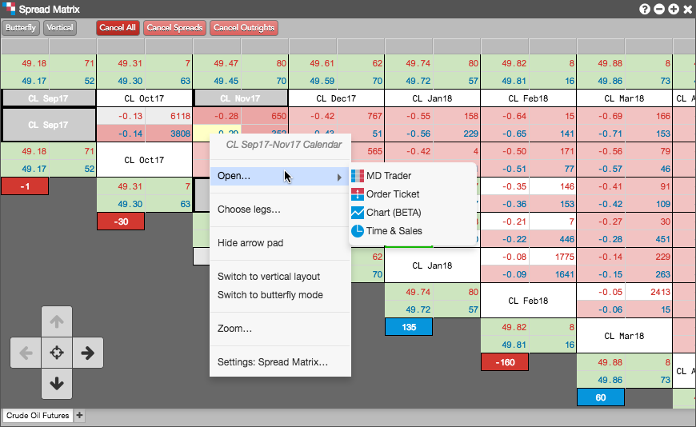
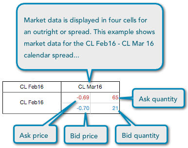
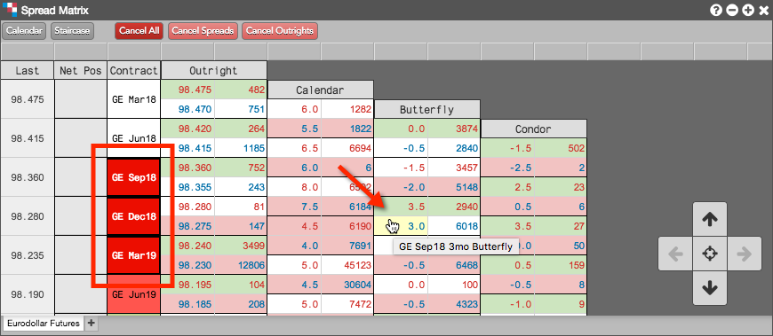
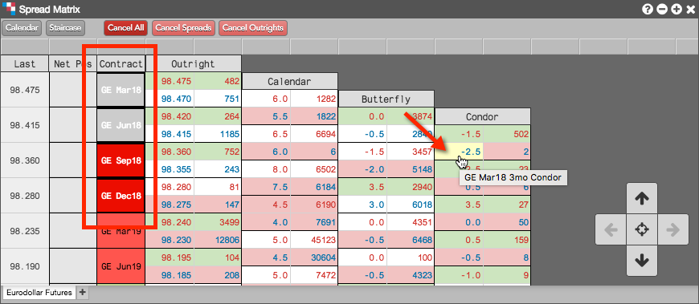

Using the Exchange Listed tab when opening the Spread Matrix, you can display market data for an exchange-listed calendar spread.
Right-click in the market data cells for a spread to view the context menu for the calendar spread. You can also right-click a single contract to open the context menu for the contract. In the context menu, select Open... to open an MD Trader, Order Ticket, Chart, or Time and Sales widget that displays the market data for the selected spread or outright contract.

Spread Matrix displays four pieces of market data for each outright contract or spread. The information is displayed in one of four cells that make up a larger grouping. The Spread Matrix displays Ask Price, Ask Quantity, Bid Price, and Bid Quantity.

The Spread Matrix calculates implied prices instead of using the exchange implieds, and displays the calculated implied data even when it is not at the best price. To help visualize the implied quantities, you can enable the Show implieds with an asterisk (*) widget setting, which will display an asterisk next to quantities that are partially or completely implied. Implied functionality varies by exchange, which determines how the implied prices function in TT.
To display prices above quantities for each outright or spread, enable (check) the Show prices above quantities option in Settings: Spread Matrix.
Using the Butterfly/Calendar toggle button on the tool bar, you can view exchange-listed Butterfly and Condor spread contracts in the Spread Matrix. When you click Butterfly to enable this mode, Spread Matrix displays the Butterfly and Condor market data for the applicable contract months.
For Butterfly spreads, prices are based on the corresponding three consecutive expires (e.g., GE Sep18, GE Dec18, GE Mar19):

For Condor spreads, prices are based on the corresponding four consecutive expiries (e.g., GE Mar18, GE Jun18, GE Sep18, GE Dec18):

Butterfly and Condor spread prices can be displayed in both the "vertical" and "staircase" orientations. By default, prices are shown using the "vertical" display when you enable Butterfly mode.